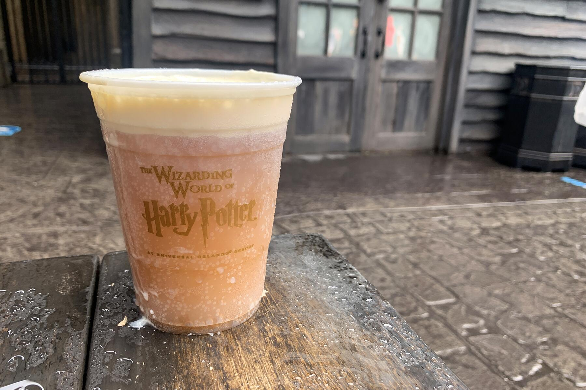

Frozen Butterbeer
Home

Description
A sweet and savory treat that any wizarding fan will love!
Ingredients
- 1 cup-frozen cream soda
- 1 cup-vanilla ice cream
- 1 tbsp-butterscotch syrup
Topping Optional
- heavy whipping cream
- butterscotch syrup
Steps
- Freeze 1 cup of cream soda
- Once fully frozen add to blender with 1 cup of ice cream and 1 tbsp of butterscotch
- Blend thoroughly untill smooth
- Pour in to glass to serve
Topping
- Add heavy whipping cream and a small amount of butterscotch to seperate container
- Whip mixture untill frothy
- Spoon mixture on top and drizzle with butterscotch syrup if desired